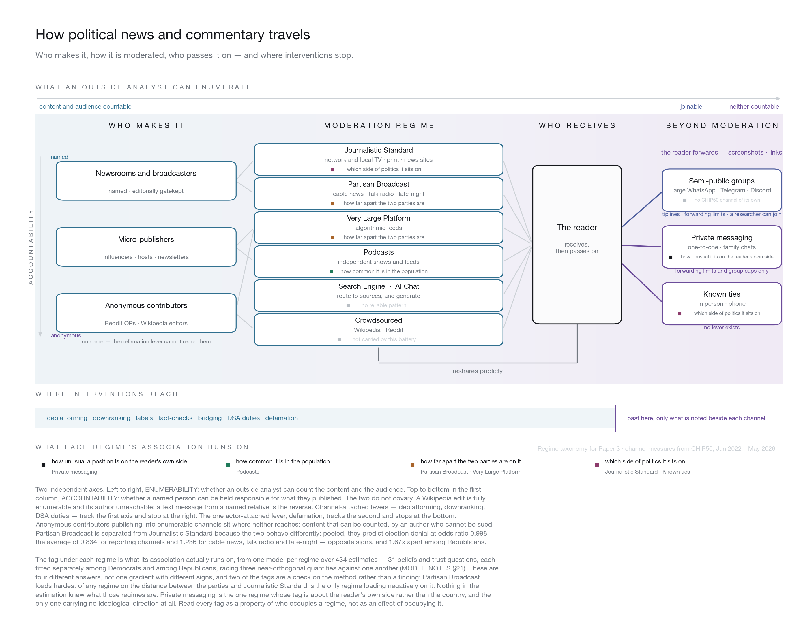

The channels that cannot be counted are the ones that matter most.
Civic Health and Institutions Project (CHIP50), June 2022 – May 2026.
Seven ways political news reaches people, sorted by what an outsider can observe about them rather than by technology. This is the landscape every estimate on this page was made across: who produces political news, how it is moderated, who passes it on, and where the available interventions stop.

Every regime except two grew. The two that shrank are the two with editors.
In 1944, studying how people made up their minds in a presidential campaign, Paul Lazarsfeld and his colleagues found something they had not gone looking for: mass media moved fewer votes than expected, and the people who did move were reached by other people. They called it the two-step flow — ideas travel from media to a smaller set of attentive people who interpret them, and from those people outward to everyone else. The second step happens in conversation, and it was always the harder one to see.
The obvious thing to say about the digital version is that algorithms removed the second step, delivering content straight from producer to person. That reading gets the theory wrong. Lazarsfeld and Katz never defined an opinion leader by closeness of tie; they defined one by function — someone who follows media more closely than most and interprets it for others, positioned within a group rather than above it. A podcaster, a newsletter writer or an influencer occupies exactly that slot, and a recommender does not replace step two so much as decide which step-two node you meet.
What has changed is the direction. The classic account is vertical: media at the top, opinion leaders below, the public below that. Hunt and Gruszczynski call what replaced it a “horizontal” two-step flow, in which influence moves sideways within peer strata in decentralised environments rather than descending from elites.
That is what the right-hand side of the map is. Read it from the middle outward: the reader receives, and then passes on — into group chats, into messages, into conversation. The classic second step ran through people whose influence could at least be described. This one runs through channels where the content and the audience cannot be counted at all, which is exactly where every instrument in the bottom band stops. The measurement problem and the theory are the same problem: the step that does the work is the step nobody can see.
Lazarsfeld, Berelson & Gaudet (1944); Katz & Lazarsfeld (1955); Hunt & Gruszczynski (2024). Full entries in the bibliography.
Before any of it: nothing on this page shows a source changing anyone's mind. People choose where they get their news, and the choosing runs on the same things the beliefs do. Every result below is “the people who use this are the people who…” and never “using this makes you…”. The full version of that warning is at the end.
Unfamiliar words — regime, odds ratio, adverse, base rate — are defined in plain language in the glossary near the end.